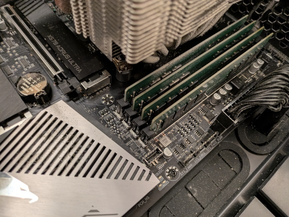

another memory corruption case
It’s another story of a mysterious memory corruption being debugged.
Story Mode
It was another usual week: I updated gcc from master
branch and tried to build my system with it. Minor failures are to be
expected here. That’s where I draw the material to explore random
packages and their failure modes. Sometimes it’s buggy build systems,
flaky tests, broken downstream users of libraries that changed API. That
kind of stuff. I usually search for compiler bugs to report.
Mysterious ggc SIGSEGV
Most builds were going without any problems. But some packages started
failing in a suspiciously similar manner. Retrying the failed build
always succeeded. An example llvm-src-20.1.8 crash looked this way:
In file included from /build/llvm-src-20.1.8/llvm/include/llvm/IR/Constants.h:23,
from /build/llvm-src-20.1.8/llvm/include/llvm/IR/ConstantFolder.h:22,
from /build/llvm-src-20.1.8/llvm/include/llvm/IR/IRBuilder.h:24,
from /build/llvm-src-20.1.8/llvm/include/llvm/Transforms/Utils/MemoryTaggingSupport.h:21,
from /build/llvm-src-20.1.8/llvm/lib/Transforms/Utils/MemoryTaggingSupport.cpp:13:
/build/llvm-src-20.1.8/llvm/include/llvm/ADT/APFloat.h:828:57: internal compiler error: Segmentation fault
828 | bool needsCleanup() const { return Floats != nullptr; }
| ^
0x256b1ab diagnostics::context::diagnostic_impl(rich_location*, diagnostics::metadata const*, diagnostics::option_id, char const*, __va_list_tag (*) [1], diagnostics::kind)
0x25639a5 internal_error(char const*, ...)
0x11697d7 crash_signal(int)
0xb5f0b3 ggc_set_mark(void const*)
0xa88877 gt_ggc_mx_lang_tree_node(void*)
0xa89221 gt_ggc_mx_lang_tree_node(void*)
0xe2dab8 gt_ggc_mx_tree_statement_list_node(void*)
0xa88fbe gt_ggc_mx_lang_tree_node(void*)
0xa89221 gt_ggc_mx_lang_tree_node(void*)
0xa89959 gt_ggc_mx_lang_tree_node(void*)
0xe2b4c3 gt_ggc_mx_vec_tree_va_gc_(void*) [clone .part.0]
0xa8a9f6 gt_ggc_mx_lang_type(void*)
0xa89b32 gt_ggc_mx_lang_tree_node(void*)
0xa899b0 gt_ggc_mx_lang_tree_node(void*)
0xa89b20 gt_ggc_mx_lang_tree_node(void*)
0xa89221 gt_ggc_mx_lang_tree_node(void*)
0xa89221 gt_ggc_mx_lang_tree_node(void*)
0xa89221 gt_ggc_mx_lang_tree_node(void*)
0xa89221 gt_ggc_mx_lang_tree_node(void*)
0xa89959 gt_ggc_mx_lang_tree_node(void*)Quick quiz: guess where the error is! A gcc bug? An llvm bug?
Some dependency? A hardware bug perhaps? Something else?
Failure intermittence was slightly worrying to me, but not too much:
gt_ggc_* set of functions is a gcc garbage collector subsystem.
Garbage collection start point is slightly dependent on the environment.
It is expected to change the behavior slightly from run to run.
Given that I see a crash on development branch of gcc there is a chance
that it’s a fresh compiler bug, like a
PR111505 from recent past.
In attempt to reduce the input file I tried to build llvm again and
failed to reproduce the same crash. I tried to add
--param=ggc-min-expand=... --param=ggc-min-heapsize=... to the
compiler flags to force more frequent garbage collection at the cost of
performance. I still was not able to reproduce the crash.
While I was dealing with llvm more packages were built in the
background. I got a few more failure examples: protobuf-34.1,
highway-1.3.0, clang-21.1.8, openjdk-21.0.10, qtwebengine-6.10.2,
gcc-master, pybind11-3.0.2. All the crashes look similar to llvm:
ggc tried to garbage-collect some c++ tree nodes and failed with
almost identical SIGSEGV backtrace.
memtest attempt
For released compilers ggc crashes are frequently a sign of hardware
failure (usually RAM or CPU). I started worrying a bit more as I did
not get any closer to solving the crashes. My next suspect was a hardware
problem: faulty DRAM.
I did a quick run of memtest86+-8.00 for 5 minutes. It revealed
nothing. I then ran it for 1.5 hours. It still revealed nothing.
Having some DRAM failures experience
in the past I was afraid that memtest86+ was not able to detect certain
kinds of problems. I also ran memtest86-11.6.1000 just in case. That
took about 5 hours and also revealed nothing.
I was hopeful that it’s not a DRAM issue. But what else? Some kernel
level (or PCI device level) corruption?
memtester
Under assumption of a kernel corruption I wondered how I should start
my search. Before doing anything more complicated I ran memtester user
space tool without much hope:
# memtester 120G
memtester version 4.7.1 (64-bit)
Copyright (C) 2001-2024 Charles Cazabon.
Licensed under the GNU General Public License version 2 (only).
pagesize is 4096
pagesizemask is 0xfffffffffffff000
want 122880MB (128849018880 bytes)
got 122880MB (128849018880 bytes), trying mlock ...locked.
Loop 1:
Stuck Address : ok
Random Value : ok
Compare XOR : ok
FAILURE: 0x121a72769006fe8f != 0x121a52769006fe8f at offset 0x0000000a68b3d918.That was unexpected! It did detect a single bit flip! 0x72 turned into
0x52. It did not tell me physical location, but I got some hope!
memtester executable code has no relation at all to gcc-master: it
and host kernel were still built and ran on gcc-15.2.0 release. Thus
it’s not related to any recent gcc changes.
Running memtester the second time (and third time) did not reveal
anything. That was confusing. But maybe I was lucky to catch a kernel
memory corruption?
Kernel corruption detector
My next suspect was a memory corruption related to kernel activity:
maybe some use-after-free kernel bug was able to flip the bit of an
unused page? I had some mixed debugging results
in the past using kernel
CONFIG_PAGE_POISONING facility: for each freed page kernel fills it
with 0xaa values, and on allocation it checks hat 0xaa pattern still
holds. I added page_poison=on to kernel command line (and
page_owner=on while at it to track the possible free side for
use-after-free bugs). I rebooted into the new kernel, ran the system
build and almost instantly got the report:
pagealloc: single bit error
ffff8a56dd9b4135: 8a .
CPU: 11 UID: 872415232 PID: 89788 Comm: clang++ Not tainted 6.19.10 #1-NixOS PREEMPT(voluntary)
Hardware name: Gigabyte Technology Co., Ltd. X570 AORUS ULTRA/X570 AORUS ULTRA, BIOS F32 GK 01/19/2021
Call Trace:
<TASK>
dump_stack_lvl+0x5d/0x80
__kernel_unpoison_pages.cold+0x49/0x83
post_alloc_hook+0xa7/0xf0
get_page_from_freelist+0x40d/0x1ac0
? cpu_util+0x81/0xf0
? update_sd_lb_stats.constprop.0+0x129/0xa30
__alloc_frozen_pages_noprof+0x1c3/0x1160
? mas_store_prealloc+0x1c6/0x410
? mod_memcg_lruvec_state+0xc5/0x1e0
? lru_gen_add_folio+0x30a/0x350
alloc_pages_mpol+0x86/0x170
vma_alloc_folio_noprof+0x6e/0xd0
folio_prealloc+0x66/0x110
do_anonymous_page+0x318/0x820
? ___pte_offset_map+0x1b/0x100
__handle_mm_fault+0xb5c/0xf80
handle_mm_fault+0xe7/0x2e0
do_user_addr_fault+0x21a/0x690
exc_page_fault+0x6a/0x150
asm_exc_page_fault+0x26/0x30
RIP: 0033:0x7fffe80b003e
Code: 48 39 ce 4c 89 4e 60 0f 95 c1 4c 29 f7 48 83 c0 10 0f b6 c9 48 89 fa 48 c1 e1 02 48 83 ca 01 4c 09 f1 48 83 c9 01 48 89 48 f8 <49> 89 51 08 e9 df fc ff ff 48 8d 0d 52 ec 11 00 ba ec 10 00 00 48
RSP: 002b:00007ffffffe5a40 EFLAGS: 00010206
RAX: 00005555567367b0 RBX: 00007fffe8204b20 RCX: 0000000000000e11
RDX: 000000000000ea51 RSI: 00007fffe8204ac0 RDI: 000000000000ea50
RBP: 00007ffffffe5aa0 R08: 0000000000000e00 R09: 00005555567375b0
R10: 0000000000000000 R11: ffffffffffffff60 R12: 00007fffe8205130
R13: 0000000000000004 R14: 0000000000000e10 R15: 0000000000000000
</TASK>
page: refcount:0 mapcount:0 mapping:0000000000000000 index:0x0 pfn:0x75d9b4
flags: 0x17fffc000000000(node=0|zone=2|lastcpupid=0x1ffff)
raw: 017fffc000000000 dead000000000100 dead000000000122 0000000000000000
raw: 0000000000000000 0000000000000000 00000000ffffffff 0000000000000000
page dumped because: pagealloc: corrupted page details
page_owner info is not present (never set?)
pagealloc: single bit error
ffff8a56dd9b4135: 8a .
CPU: 12 UID: 872415232 PID: 90089 Comm: clang++ Not tainted 6.19.10 #1-NixOS PREEMPT(voluntary)
Hardware name: Gigabyte Technology Co., Ltd. X570 AORUS ULTRA/X570 AORUS ULTRA, BIOS F32 GK 01/19/2021
Call Trace:
<TASK>
dump_stack_lvl+0x5d/0x80
__kernel_unpoison_pages.cold+0x49/0x83
post_alloc_hook+0xa7/0xf0
get_page_from_freelist+0x40d/0x1ac0
? mas_store_prealloc+0x1c6/0x410
__alloc_frozen_pages_noprof+0x1c3/0x1160
? lru_gen_add_folio+0x30a/0x350
? xas_load+0xd/0xd0
? filemap_get_entry+0xf4/0x1a0
? mod_memcg_lruvec_state+0xc5/0x1e0
? lruvec_stat_mod_folio+0x85/0xd0
alloc_pages_mpol+0x86/0x170
vma_alloc_folio_noprof+0x6e/0xd0
? finish_fault+0x292/0x4b0
folio_prealloc+0x66/0x110
do_fault+0x7b/0x580
? ___pte_offset_map+0x1b/0x100
__handle_mm_fault+0x957/0xf80
? update_irq_load_avg+0x47/0x520
handle_mm_fault+0xe7/0x2e0
do_user_addr_fault+0x21a/0x690
exc_page_fault+0x6a/0x150
asm_exc_page_fault+0x26/0x30
RIP: 0033:0x7ffff7fd3929
Code: c8 3e ff e0 0f 1f 44 00 00 8b 50 08 48 83 fa 26 74 0a 48 83 fa 08 0f 85 83 0d ff ff 48 8b 48 10 48 8b 10 48 83 c0 18 4c 01 d9 <4a> 89 0c 1a 48 39 d8 72 d6 4d 8b 97 08 02 00 00 4d 85 d2 0f 85 be
RSP: 002b:00007fffffff3c20 EFLAGS: 00010202
RAX: 00007fffe957c108 RBX: 00007fffe95814f0 RCX: 00007fffedba3340
RDX: 000000000a9198b0 RSI: 00007ffff7ffde40 RDI: 00007fffffff3cb0
RBP: 00007fffffff3d20 R08: 0000000000000000 R09: 0000000000000000
R10: 00007ffff7fb9a40 R11: 00007fffe8800000 R12: 0000000000000000
R13: 0000000000000010 R14: 0000000000000000 R15: 00007ffff7fb9a40
</TASK>
page: refcount:0 mapcount:0 mapping:0000000000000000 index:0x5555556e8 pfn:0x75d9b4
flags: 0x17fffc000000000(node=0|zone=2|lastcpupid=0x1ffff)
raw: 017fffc000000000 dead000000000100 dead000000000122 0000000000000000
raw: 00000005555556e8 0000000000000000 00000000ffffffff 0000000000000000
page dumped because: pagealloc: corrupted page details
page_owner tracks the page as freed
page last allocated via order 0, migratetype Movable, gfp_mask 0x140dca(GFP_HIGHUSER_MOVABLE|__GFP_ZERO|__GFP_COMP), pid 89871, tgid 89871 (clang++), ts 357814293855, free_ts 358057248126
post_alloc_hook+0xd5/0xf0
get_page_from_freelist+0x40d/0x1ac0
__alloc_frozen_pages_noprof+0x1c3/0x1160
alloc_pages_mpol+0x86/0x170
vma_alloc_folio_noprof+0x6e/0xd0
folio_prealloc+0x66/0x110
do_anonymous_page+0x318/0x820
__handle_mm_fault+0xb5c/0xf80
handle_mm_fault+0xe7/0x2e0
do_user_addr_fault+0x21a/0x690
exc_page_fault+0x6a/0x150
asm_exc_page_fault+0x26/0x30
page last free pid 89871 tgid 89871 stack trace:
free_unref_folios+0x52f/0x9b0
folios_put_refs+0x120/0x1d0
free_pages_and_swap_cache+0x108/0x1b0
__tlb_batch_free_encoded_pages+0x45/0xa0
tlb_flush_mmu+0x52/0x70
unmap_page_range+0xa79/0x15c0
unmap_vmas+0xa1/0x180
exit_mmap+0xe1/0x3c0
__mmput+0x41/0x150
do_exit+0x267/0xaa0
do_group_exit+0x2d/0xc0
__x64_sys_exit_group+0x18/0x20
x64_sys_call+0x14fd/0x1510
do_syscall_64+0xb6/0x560
entry_SYSCALL_64_after_hwframe+0x77/0x7fSingle bit data corruption! I rebooted a few times and I always for the
same reproducer: corruption always looked like ...135: 8a and happened
at pfn:0x75d9b4. That is a 0x75d9b4000 physical page.
This trace below says that memory was used for virtual memory for user space process. Nothing unusual. Very typical use of a page (not some GPU driver that could have freed a page too early or similar).
The Workaround
Seeing the same physical address where address corruption happens was
unexpected and relieving. linux has a mechanism to carve out a bit of
physical memory and declare it “unusable”.
I used “reserved” form of it as a memmap=4K$0x75d9b4000 kernel command
line flag. To verify that it works I looked at dmesg memory layout:
[ 0.000000] BIOS-e820: [mem 0x0000000000000000-0x000000000009ffff] usable
[ 0.000000] BIOS-e820: [mem 0x00000000000a0000-0x00000000000fffff] reserved
[ 0.000000] BIOS-e820: [mem 0x0000000000100000-0x0000000009e1ffff] usable
[ 0.000000] BIOS-e820: [mem 0x0000000009e20000-0x0000000009ffffff] reserved
[ 0.000000] BIOS-e820: [mem 0x000000000a000000-0x000000000a1fffff] usable
[ 0.000000] BIOS-e820: [mem 0x000000000a200000-0x000000000a20dfff] ACPI NVS
[ 0.000000] BIOS-e820: [mem 0x000000000a20e000-0x00000000bc3dffff] usable
[ 0.000000] BIOS-e820: [mem 0x00000000bc3e0000-0x00000000bc7e6fff] reserved
[ 0.000000] BIOS-e820: [mem 0x00000000bc7e7000-0x00000000bc848fff] ACPI data
[ 0.000000] BIOS-e820: [mem 0x00000000bc849000-0x00000000bcee2fff] ACPI NVS
[ 0.000000] BIOS-e820: [mem 0x00000000bcee3000-0x00000000bdbfefff] reserved
[ 0.000000] BIOS-e820: [mem 0x00000000bdbff000-0x00000000beffffff] usable
[ 0.000000] BIOS-e820: [mem 0x00000000bf000000-0x00000000bfffffff] reserved
[ 0.000000] BIOS-e820: [mem 0x00000000f0000000-0x00000000f7ffffff] reserved
[ 0.000000] BIOS-e820: [mem 0x00000000fd100000-0x00000000fd1fffff] reserved
[ 0.000000] BIOS-e820: [mem 0x00000000fd300000-0x00000000fd4fffff] reserved
[ 0.000000] BIOS-e820: [mem 0x00000000fea00000-0x00000000fea0ffff] reserved
[ 0.000000] BIOS-e820: [mem 0x00000000feb80000-0x00000000fec01fff] reserved
[ 0.000000] BIOS-e820: [mem 0x00000000fec10000-0x00000000fec10fff] reserved
[ 0.000000] BIOS-e820: [mem 0x00000000fed00000-0x00000000fed00fff] reserved
[ 0.000000] BIOS-e820: [mem 0x00000000fed40000-0x00000000fed44fff] reserved
[ 0.000000] BIOS-e820: [mem 0x00000000fed80000-0x00000000fed8ffff] reserved
[ 0.000000] BIOS-e820: [mem 0x00000000fedc2000-0x00000000fedcffff] reserved
[ 0.000000] BIOS-e820: [mem 0x00000000fedd4000-0x00000000fedd5fff] reserved
[ 0.000000] BIOS-e820: [mem 0x00000000ff000000-0x00000000ffffffff] reserved
[ 0.000000] BIOS-e820: [mem 0x0000000100000000-0x000000203f2fffff] usable
[ 0.000000] BIOS-e820: [mem 0x000000203f300000-0x000000203fffffff] reserved
...
[ 0.000000] user-defined physical RAM map:
[ 0.000000] user: [mem 0x0000000000000000-0x000000000009ffff] usable
[ 0.000000] user: [mem 0x00000000000a0000-0x00000000000fffff] reserved
[ 0.000000] user: [mem 0x0000000000100000-0x0000000009e1ffff] usable
[ 0.000000] user: [mem 0x0000000009e20000-0x0000000009ffffff] reserved
[ 0.000000] user: [mem 0x000000000a000000-0x000000000a1fffff] usable
[ 0.000000] user: [mem 0x000000000a200000-0x000000000a20dfff] ACPI NVS
[ 0.000000] user: [mem 0x000000000a20e000-0x00000000bc3dffff] usable
[ 0.000000] user: [mem 0x00000000bc3e0000-0x00000000bc7e6fff] reserved
[ 0.000000] user: [mem 0x00000000bc7e7000-0x00000000bc848fff] ACPI data
[ 0.000000] user: [mem 0x00000000bc849000-0x00000000bcee2fff] ACPI NVS
[ 0.000000] user: [mem 0x00000000bcee3000-0x00000000bdbfefff] reserved
[ 0.000000] user: [mem 0x00000000bdbff000-0x00000000beffffff] usable
[ 0.000000] user: [mem 0x00000000bf000000-0x00000000bfffffff] reserved
[ 0.000000] user: [mem 0x00000000f0000000-0x00000000f7ffffff] reserved
[ 0.000000] user: [mem 0x00000000fd100000-0x00000000fd1fffff] reserved
[ 0.000000] user: [mem 0x00000000fd300000-0x00000000fd4fffff] reserved
[ 0.000000] user: [mem 0x00000000fea00000-0x00000000fea0ffff] reserved
[ 0.000000] user: [mem 0x00000000feb80000-0x00000000fec01fff] reserved
[ 0.000000] user: [mem 0x00000000fec10000-0x00000000fec10fff] reserved
[ 0.000000] user: [mem 0x00000000fed00000-0x00000000fed00fff] reserved
[ 0.000000] user: [mem 0x00000000fed40000-0x00000000fed44fff] reserved
[ 0.000000] user: [mem 0x00000000fed80000-0x00000000fed8ffff] reserved
[ 0.000000] user: [mem 0x00000000fedc2000-0x00000000fedcffff] reserved
[ 0.000000] user: [mem 0x00000000fedd4000-0x00000000fedd5fff] reserved
[ 0.000000] user: [mem 0x00000000ff000000-0x00000000ffffffff] reserved
[ 0.000000] user: [mem 0x0000000100000000-0x000000075d9b3fff] usable
[ 0.000000] user: [mem 0x000000075d9b4000-0x000000075d9b4fff] reserved
[ 0.000000] user: [mem 0x000000075d9b5000-0x000000203f2fffff] usable
[ 0.000000] user: [mem 0x000000203f300000-0x000000203fffffff] reservedThe main details here is
[ 0.000000] user: [mem 0x000000075d9b4000-0x000000075d9b4fff] reserved
entry. It confirms we successfully yanked that page out of usable kernel
area. It should not be used by kernel by anything now. Fun fact:
memmap=
has many more forms of removing memory regions.
Exploring the Corruption
After I booted into the kernel with memmap=4K$0x75d9b4000 I saw no
more poisoned page reports! I had no gcc crashes in ggc subsystem
either. Yay!
This once again hints at DRAM problems. But why didn’t memtest
detect it? It looks as simple as writing 0xaa there and checking it
back.
I wondered if I can try to use that bit of RAM from user space to
explore various failure modes. Turns out we can even do it manually
using /dev/mem! The simplest way is to use … dd!
Writing 0xaa there:
$ for i in `seq 1 4096`; do printf "\xaa"; done | sudo dd of=/dev/mem if=/dev/stdin bs=1 count=4096 seek=$((0x75d9b4000))Reading it back:
$ sudo dd if=/dev/mem of=/dev/stdout bs=1 count=4096 skip=$((0x75d9b4000)) | hexdump -C
00000000 aa aa aa aa aa aa aa aa aa aa aa aa aa aa aa aa |................|
*
00000130 aa aa aa aa aa 8a aa aa aa aa aa aa aa aa aa aa |................|
00000140 aa aa aa aa aa aa aa aa aa aa aa aa aa aa aa aa |................|
*
4096+0 records in
4096+0 records out
4096 bytes (4,1 kB, 4,0 KiB) copied, 0,00671952 s, 610 kB/s
00001000Yay! It corrupted memory outright! See that 8a? It’s our lost bit. But
why didn’t memtest detect it? We can do other patterns as well, like 0xff:
$ sudo dd if=/dev/mem of=/dev/stdout bs=1 count=4096 skip=$((0x75d9b4000)) | hexdump -C
00000000 ff ff ff ff ff ff ff ff ff ff ff ff ff ff ff ff |................|
*
4096+0 records in
4096+0 records out
4096 bytes (4,1 kB, 4,0 KiB) copied, 0,00641963 s, 638 kB/s
00001000
$ sudo dd if=/dev/mem of=/dev/stdout bs=1 count=4096 skip=$((0x75d9b4000)) | hexdump -C
00000000 ff ff ff ff ff ff ff ff ff ff ff ff ff ff ff ff |................|
*
4096+0 records in
4096+0 records out
4096 bytes (4,1 kB, 4,0 KiB) copied, 0,00654903 s, 625 kB/s
00001000It does not get corrupted (or at least not as fast).
I think the main answer why memtest failed is because data does not get
lost instantly and it pattern-dependent. It usually takes a few seconds
for 0xaa to degrade into 0x8a.
Validating DRAM Hypothesis
To make sure it’s a DRAM-specific failure (and not some driver or
device miscalculating target address to write) I reshuffled my DRAM
modules on the motherboard to see how the error address will change.
I have 4 x 32GiB DDR4 modules. Let’s call them A, B, C, D
(left to right on the pic).

Legend:
- underscore (
_) means free slot (unplugged module) - letter (
A,B,C,D) means plugged module
| config | result | corruption address |
|---|---|---|
A B C D |
bad | pfn:0x75d9b4 offset:0x135 value:0x8a |
A B _ _ |
ok | |
A B C D |
bad | pfn:0x75d9b4 offset:0x135 value:0x8a |
A B D C |
bad | pfn:0x75d934 offset:0x135 value:0x8a |
_ _ D C |
bad | pfn:0x3cec9a offset:0x035 value:0x8a |
_ _ _ C |
ok | |
_ _ _ D |
ok | |
_ _ A D |
ok | |
_ _ A C |
bad | pfn:0x3cec9a offset:0x035 value:0x8a |
_ _ A B |
ok | |
A B C D |
bad | pfn:0x75d9b4 offset:0x135 value:0x8a |
Here we can see a few facts:
- the error only happens in dual-channel mode
- the error only happens where
Cmodule is plugged in Calone does not cause corruption- failure address difference between
ABCD/ABDCshows us a bit of internals howDDR4interleaves underlying data from memory modules in dual channel mode.
Parting Words
Despite memtest86+ and memtest being all clean on my RAM I think
I have one bit of RAM discharging too fast and losing data. And it
only happens on particular data patters present in nearby cells!
gcc was the first program that manifested RAM failures. It started
crashing in gcc functions.
memtester user space tool did manage to catch memory bit flip.
page_poison=on kernel parameter is also great at catching slowly
decaying RAM.
memmap=4K$0x75d9b4000 kernel parameter allowed me to completely
recover the machine from RAM data corruption at a cost of 4K bytes.
/dev/mem allows you to trivially read and write physical memory from
user space (say, via dd).
DRAM and DDR4 specifically has many curious bits:
- the charge can stay in the cell for about 1-10 seconds, and the module
refreshes it every
~64msor so (link). I suspect it somehow breaks just for one(!) bit for me. Out of1Tbits! - dual-channel mode uses memory interleaving: linear physical address
space balances every N bytes to supply it from Channel
AorB. From theABCD/ABDCmodule swap it looks like the distance between addresses of a failed bit is~500K. Not sure what it makes the stripe size. I hoped for a smaller number :)
I wanted to try a few more things, but either failed or did not get to it.
Resolving arbitrary virtual to physical addresses. memtester is a
simple user space program: it mlock()s a bit of RAM, writes to it,
reads it back and verifies the result. Any nontrivial amount of
mlock()ed memory effectively requires privileged capabilities.
I wondered if linux provides an API to convert virtual address to
physical address. And indeed it does via
/proc/$pid/pagemap
file. It should be trivial to extend memtest to use it for resolution.
Relying on trivial memtest to catch corruption is scary. It’s the
second time
these tools miss defective RAM on my machines. Would be nice to have
something more resilient against it. ECC RAM would be one thing, but
I don’t have it yet. I also hoped that mem_encrypt=on could help in
that, but my system did not boot with it. I’d like to figure out why
exactly.
Have fun!